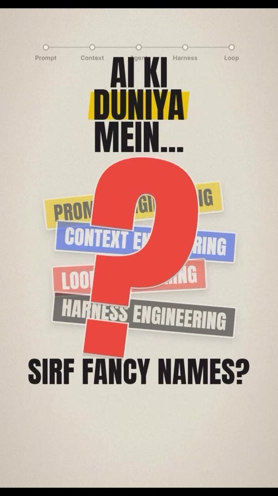
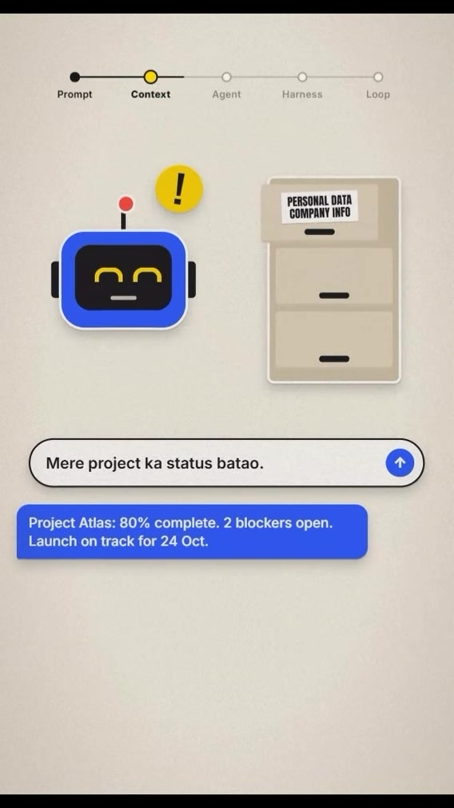
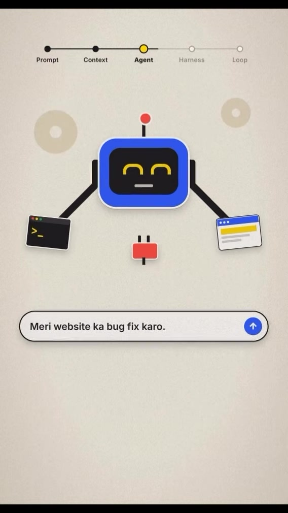
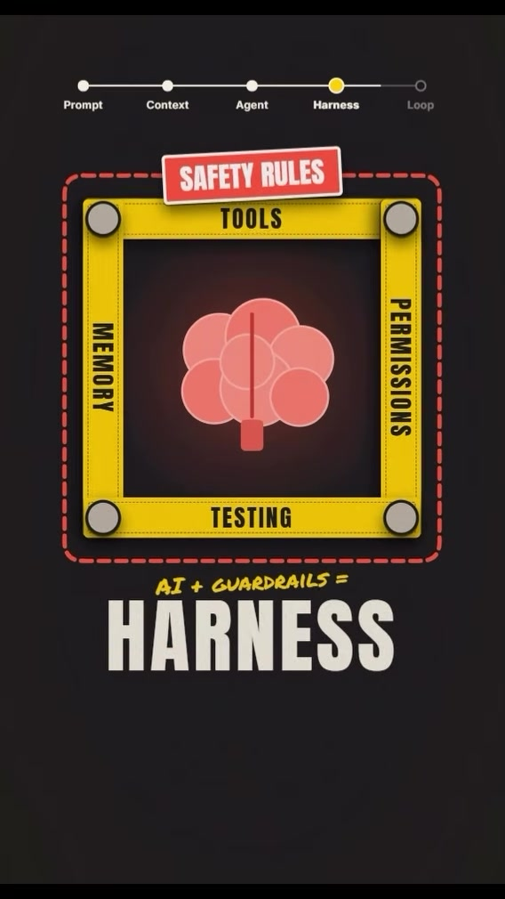
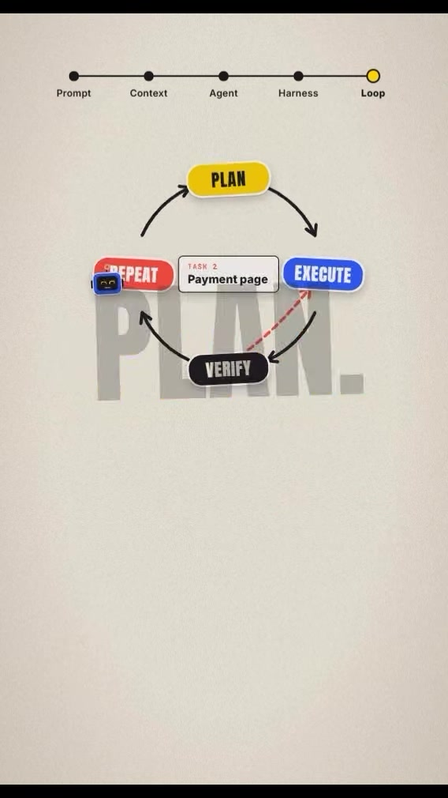

Executive Summary
The discipline of building software with Foundation Models has shifted rapidly over the past three years. Early practitioners treated AI systems as text-in/text-out probabilistic boxes, concentrating effort entirely on phrasing inputs (Prompt Engineering).
As production requirements demanded deterministic accuracy, multi-step planning, and autonomous execution, the engineering stack stratified into five distinct architectural layers:
- Prompt Engineering: Optimizing raw input phrasing, tone, and few-shot formatting.
- Context Engineering: Dynamic retrieval (RAG), session memory, and semantic token pruning.
- Agent Engineering: Giving models sensory tools, function calling, and environment actuation.
- Harness Engineering: Wrapping models in strict runtime guardrails, sandboxing, tool permissions, and state tracking (AI + Guardrails = Harness).
- Loop Engineering: Autonomous multi-turn convergence loops (Plan → Execute → Verify → Repeat) that iteratively test and self-correct until code or workflows succeed.
Visual Architecture & The 5-Stage Evolution





Detailed Layer-by-Layer Architectural Breakdown
| Evolutionary Stage | Primary Objective | Core Technologies & Patterns | Failure Modes When Neglected |
|---|---|---|---|
| 1. Prompt Engineering | Guiding model tone, persona, and output syntax via raw string templates. | Few-shot exemplars, role prompting, chain-of-thought formatting, markdown output tags. | Brittleness across model versions, format drifts, high variance in responses. |
| 2. Context Engineering | Curating the exact minimum set of high-signal tokens needed for accurate reasoning. | Vector databases (pgvector, Chroma), hybrid BM25 search, token pruning, session summarization, AST code chunking. | Context window exhaustion, "lost-in-the-middle" hallucinations, exorbitant API inference costs. |
| 3. Agent Engineering | Allowing the model to interact with the external world and query live systems. | Tool calling (OpenAI function calling, Anthropic tool use), Model Context Protocol (MCP), ReAct patterns. | Passive conversational models unable to affect reality or verify real-time facts. |
| 4. Harness Engineering | Restricting, isolating, and observing agent actions to prevent catastrophic failure. | Container sandboxes (Docker, WebAssembly), permission interceptors, file read-before-write checks, state checkpoints. | Unchecked destructive commands (rm -rf, accidental database drops, infinite runaway billing loops). |
| 5. Loop Engineering | Orchestrating autonomous self-correcting cycles that iterate until goals are verified. | Plan → Execute → Verify → Repeat, SWE-bench evaluation runners, deterministic unit test verification, multi-agent debates. | Early exit upon hallucinated success, inability to fix subtle compilation errors or runtime exceptions. |
The Loop Engineering Cycle (Plan → Execute → Verify → Repeat)
┌─────────────────────────────────────────────────────────────┐
│ 1. PLAN │
│ - Break complex instruction into discrete verifiable steps │
│ - Define exact assertion criteria (e.g. exit 0, tests pass)│
└──────────────────────────────┬──────────────────────────────┘
│
▼
┌─────────────────────────────────────────────────────────────┐
│ 2. EXECUTE │
│ - Invoke sandboxed tools (file edit, run command, query DB)│
│ - Apply minimal surgical code modifications │
└──────────────────────────────┬──────────────────────────────┘
│
▼
┌─────────────────────────────────────────────────────────────┐
│ 3. VERIFY │
│ - Execute deterministic test suite / linter │
│ - Parse actual stdout / stderr for regression signals │
└──────────────────────────────┬──────────────────────────────┘
│
┌──────────────┴──────────────┐
▼ ▼
[Verification Fails] [Verification Passes]
│ │
▼ ▼
┌──────────────────────────────┐┌──────────────────────────────┐
│ 4. REPEAT ││ 5. COMPLETE │
│ - Backtrack changes ││ - Log evidence & diffs │
│ - Adjust plan & re-execute ││ - Exit loop cleanly │
└──────────────────────────────┘└──────────────────────────────┘Engineering Principles for Systems Architects
- Smart Models in Dumb Harnesses Fail: Giving a 100B+ frontier parameter model full root shell access without an execution harness guarantees corrupted environments. System reliability stems from the harness, not raw model IQ.
- Verification is Queen: If an agent cannot programmatically verify its own output via a compiler, unit test, or visual screenshot assertion, it cannot operate in a Loop. Never deploy autonomous loops without deterministic test oracles.
- Context Pruning Trumps Context Size: Even with 2M+ context windows, precision drops as irrelevant noise increases. High-performing AI applications spend 70% of engineering bandwidth on Context Engineering.